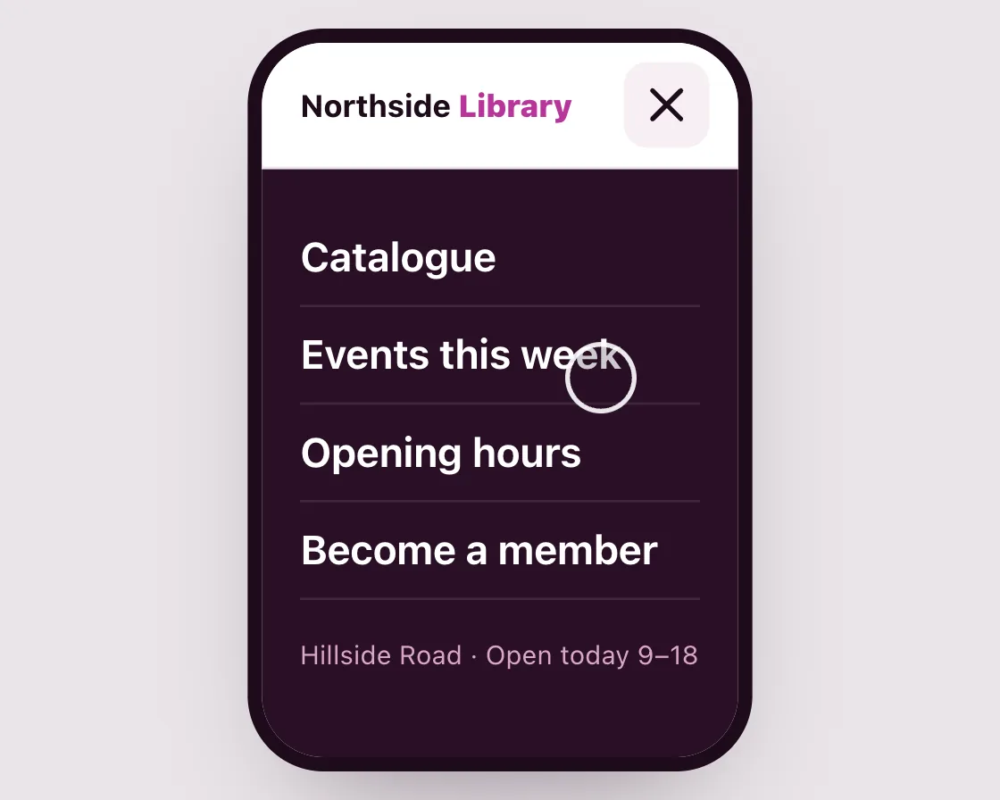

Menu to close
Menu to close is a DOM effect: three two-point lines, the middle one shrinks to a dot. One plain JavaScript file with no dependencies; add it with npx motion-library add menu-close.

Open it live, tune it and copy the code
What is Menu to close?
Three lines fold into an X and the menu panel wipes down with its links arriving in turn.
How does Menu to close work?
The outer lines rotate into the diagonals while the middle one collapses; a slight turn hides the in-between frames, and the panel uses a clip-path wipe.
How do I add Menu to close to my website?
- In your project folder, run
npx motion-library add menu-close. It writesanimations/menu-close.js. Needs Node 18 or newer. - Import it and call it with a container element that has a size:
import fx from './animations/menu-close.js'; const stop = fx(document.querySelector('#hero')); - Call
stop()to clean up, for example when a component unmounts.
Every setting below is also a flag, so you can install it already tuned: npx motion-library add menu-close --duration 600.
What settings can I tweak?
| Setting | Flag | Default | Range | Step |
|---|---|---|---|---|
| Morph (ms) | --duration | 260 | 120 to 600 | 10 |
| Link stagger (ms) | --stagger | 45 | 0 to 120 | 5 |
Specifications
- Renderer
- DOM (CSS and the Web Animations API)
- Category
- Morph & SVG
- Dependencies
- None
- File size
- 7.7 KB, unminified
- Interactive
- Yes: it responds to the pointer
- Reduced motion
- Respects prefers-reduced-motion
- Licence
- MIT-0: use it anywhere, no credit needed
Source code
// Menu to close: three lines become an X because the top and bottom lines rotate into the diagonals while the middle one shrinks to a point, all with the same two points per line. The menu panel opens underneath with links arriving one after another, so the icon and the panel read as one action.
const PARAMS = { duration: 260, stagger: 45 };
export default function (stage) {
const reduce = matchMedia('(prefers-reduced-motion: reduce)').matches;
const root = document.createElement('div');
root.className = 'mc-root';
const links = ['Catalogue', 'Events this week', 'Opening hours', 'Become a member'];
root.innerHTML = `<style>
.mc-root { position: absolute; inset: 0; overflow: hidden; background: radial-gradient(120% 100% at 50% 0%, #1b1b1e, #0d0d0f); font-family: system-ui, -apple-system, sans-serif; }
.mc-b { position: absolute; left: 50%; top: 50%; width: 420px; height: 320px; transform-origin: 0 0; }
.mc-ph { position: absolute; left: 110px; top: 10px; width: 200px; height: 300px; border-radius: 26px; background: #fff; overflow: hidden; box-shadow: 0 0 0 6px #1d0b1a, 0 24px 50px -20px rgba(29,11,26,.5); }
.mc-hd { position: absolute; left: 0; right: 0; top: 0; height: 52px; display: flex; align-items: center; padding: 0 12px 0 16px; z-index: 2; background: #fff; border-bottom: 1px solid #f0e6ee; }
.mc-logo { font-size: 13px; font-weight: 720; letter-spacing: -.01em; color: #1d0b1a; flex: 1; }
.mc-logo b { color: #b8359a; }
.mc-btn { width: 36px; height: 36px; border: 0; padding: 0; border-radius: 10px; background: #f6eff4; cursor: pointer; display: grid; place-items: center; }
.mc-btn svg { width: 22px; height: 22px; overflow: visible; }
.mc-page { position: absolute; left: 16px; right: 16px; top: 68px; }
.mc-hero { height: 92px; border-radius: 12px; background: linear-gradient(160deg, #f7d6ea, #e9a8cf); }
.mc-h { margin-top: 12px; font-size: 15px; font-weight: 700; color: #1d0b1a; line-height: 1.2; }
.mc-p { margin-top: 6px; font-size: 11px; line-height: 1.4; color: #6b5867; }
.mc-menu { position: absolute; left: 0; right: 0; top: 52px; bottom: 0; background: #2a0f26; padding: 18px 16px; z-index: 1; clip-path: inset(0 0 100% 0); transition: clip-path var(--d) cubic-bezier(0.23, 1, 0.32, 1); }
.mc-ph.open .mc-menu { clip-path: inset(0 0 0 0); }
.mc-menu a { display: block; padding: 10px 0; font-size: 17px; font-weight: 650; color: #fff; text-decoration: none; border-bottom: 1px solid rgba(255,255,255,.1); opacity: 0; transform: translateY(10px); transition: opacity 200ms cubic-bezier(0.23, 1, 0.32, 1), transform 260ms cubic-bezier(0.23, 1, 0.32, 1); }
.mc-ph.open .mc-menu a { opacity: 1; transform: none; }
.mc-menu small { display: block; margin-top: 16px; font-size: 11px; color: #d9a6c8; opacity: 0; transition: opacity 200ms ease-out; }
.mc-ph.open .mc-menu small { opacity: 1; }
.mc-cur { position: absolute; left: 0; top: 0; width: 26px; height: 26px; margin: -13px; border-radius: 50%; background: rgba(29,11,26,.22); border: 2px solid rgba(255,255,255,.9); pointer-events: none; z-index: 5; transition: transform 700ms cubic-bezier(0.23, 1, 0.32, 1), opacity 200ms; }
.mc-cur.down { background: rgba(184,53,154,.45); }
${reduce ? '.mc-menu { clip-path: none; opacity: 0; pointer-events: none; transition: opacity var(--d) ease-out; } .mc-ph.open .mc-menu { opacity: 1; pointer-events: auto; } .mc-menu a { transform: none; }' : ''}
</style>
<div class="mc-b"><div class="mc-ph">
<div class="mc-hd"><div class="mc-logo">Northside <b>Library</b></div>
<button class="mc-btn" type="button" aria-label="Open menu" aria-expanded="false"><svg viewBox="0 0 24 24"><path fill="none" stroke="#1d0b1a" stroke-width="2.2" stroke-linecap="round"/></svg></button></div>
<div class="mc-page"><div class="mc-hero"></div><div class="mc-h">Late opening every Thursday until 9 pm</div><div class="mc-p">Study rooms, the reading garden and the children’s floor stay open late.</div></div>
<nav class="mc-menu">${links.map(l => `<a href="#">${l}</a>`).join('')}<small>Hillside Road · Open today 9–18</small></nav>
</div><div class="mc-cur"></div></div>`;
stage.append(root);
const board = root.querySelector('.mc-b'), ph = root.querySelector('.mc-ph'), btn = root.querySelector('.mc-btn'), path = root.querySelector('path'), cur = root.querySelector('.mc-cur');
const items = [...root.querySelectorAll('.mc-menu a'), root.querySelector('.mc-menu small')];
const fit = () => { const s = Math.min(stage.clientWidth / 420, stage.clientHeight / 320); board.style.transform = `scale(${s}) translate(-50%, -50%)`; };
const ro = new ResizeObserver(fit); ro.observe(stage); fit();
ph.style.setProperty('--d', PARAMS.duration * 1.3 + 'ms');
const onNav = e => e.preventDefault(); root.querySelector('.mc-menu').addEventListener('click', onNav);
// Three lines of two points each; close collapses the middle line to its centre.
const menu = [[[4, 6], [20, 6]], [[4, 12], [20, 12]], [[4, 18], [20, 18]]];
const close = [[[5.5, 5.5], [18.5, 18.5]], [[12, 12], [12, 12]], [[5.5, 18.5], [18.5, 5.5]]];
const toD = v => menu.map((l, i) => 'M' + l.map((p, j) => [p[0] + (close[i][j][0] - p[0]) * v, p[1] + (close[i][j][1] - p[1]) * v].map(n => n.toFixed(2)).join(' ')).join('L')).join('');
const bez = (x1, y1, x2, y2) => x => { let t = x; for (let i = 0; i < 6; i++) { const cx = 3 * x1 * t * (1 - t) ** 2 + 3 * x2 * t * t * (1 - t) + t ** 3 - x, d = 3 * x1 * (1 - t) ** 2 + 6 * (x2 - x1) * t * (1 - t) + 3 * (1 - x2) * t * t; if (Math.abs(d) < 1e-6) break; t -= cx / d; } t = Math.min(1, Math.max(0, t)); return 3 * y1 * t * (1 - t) ** 2 + 3 * y2 * t * t * (1 - t) + t ** 3; };
const ease = bez(0.77, 0, 0.175, 1);
let from = 0, to = 0, start = -1e9, open = false, raf, manual = -1e9;
const setOpen = o => {
from = from + (to - from) * ease(Math.min(1, (performance.now() - start) / PARAMS.duration)); to = o ? 1 : 0; start = performance.now(); open = o;
// reduced motion: the icon snaps between menu and X and fades in; the panel crossfades instead of wiping down
if (reduce) { start = -1e9; path.parentNode.animate([{ opacity: 0 }, { opacity: 1 }], { duration: PARAMS.duration, easing: 'ease-out' }); }
items.forEach((el, i) => { el.style.transitionDelay = o ? 60 + i * PARAMS.stagger + 'ms' : '0ms'; });
ph.classList.toggle('open', o); btn.setAttribute('aria-expanded', o); btn.setAttribute('aria-label', o ? 'Close menu' : 'Open menu');
};
const onClick = () => { manual = performance.now(); setOpen(!open); };
btn.addEventListener('click', onClick);
function frame(now) {
const k = ease(Math.min(1, (now - start) / PARAMS.duration)), v = from + (to - from) * k;
path.setAttribute('d', toD(v));
path.parentNode.style.transform = `rotate(${(Math.sin(Math.PI * k) * 12 * (to > from ? 1 : -1)).toFixed(2)}deg)`;
raf = requestAnimationFrame(frame);
}
raf = requestAnimationFrame(frame);
const T = new Set(), after = (ms, f) => { const id = setTimeout(() => { T.delete(id); f(); }, ms); T.add(id); };
const move = (x, y) => { cur.style.transform = `translate(${x}px, ${y}px)`; };
const tap = () => { cur.classList.add('down'); after(140, () => { cur.classList.remove('down'); if (performance.now() - manual > 4000) setOpen(!open); }); };
move(250, 230);
const cycle = () => {
move(282, 36); after(750, tap);
after(1000, () => move(250, 150));
after(2600, () => move(282, 36)); after(3350, tap);
after(3700, () => move(240, 230));
after(5000, cycle);
};
after(150, cycle);
return () => { cancelAnimationFrame(raf); T.forEach(clearTimeout); T.clear(); ro.disconnect(); btn.removeEventListener('click', onClick); root.querySelector('.mc-menu').removeEventListener('click', onNav); root.remove(); };
}